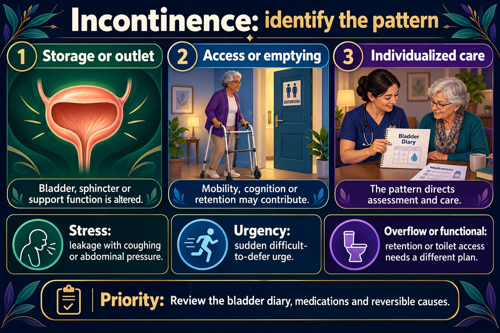

The anatomy & physiology of voiding — and how to retrain it
Two muscles decide everything. The detrusor squeezes the urine out; the sphincters hold it in. Continence is just those two taking turns on cue. Learn the wiring first — then bladder training, Kegels and timed voiding stop being random tips and start being mechanism. (The five types of incontinence live on the companion page, NG-272.)
📄 Simple Nursing original — opens in Drive →
One muscle, two doors, one reflex loop, and a brain with veto power.

A bladder diary, medication review and assessment for reversible causes guide care.
Storage or outlet problem
Bladder, sphincter or support function is altered.
Access or emptying problem
Mobility, cognition or retention may contribute.
Individualized treatment
The pattern directs assessment and care.
Stress
Leakage with increased abdominal pressure, such as coughing.
Urgency
Leakage associated with a sudden difficult-to-defer urge.
Overflow or functional
Retention or difficulty reaching/using the toilet requires a different plan.
Read it as a chain: kidneys make urine ➜ ureters deliver it ➜ the detrusor relaxes to store it ➜ the trigone stays flat ➜ two sphincters hold the door ➜ when the brain says yes, the detrusor squeezes and both doors open.
Typical adult: 1500 mL of urine a day over about 5–6 voids. Voiding more than 8 times in 24 hours is frequency; getting up more than once at night is nocturia.
Behavioral therapy comes before drugs and before surgery — on the exam and in practice.
| ✅ DO | ❌ DON'T |
|---|---|
| Squeeze as if you are stopping urine and holding in gas at the same time | Don't routinely stop the stream mid-void to practice — use it once only to find the muscle; repeating it causes incomplete emptying |
| Breathe normally and count out loud | Don't hold your breath or bear down |
| Isolate the pelvic floor only | Don't tighten the abdomen, buttocks or thighs |
| Do them anywhere — sitting, standing, lying, in line at the store | Don't quit early — expect 4–6 weeks for improvement, up to 3 months for full benefit |
Who benefits: stress incontinence ✅ · urge incontinence ✅ (quick contractions suppress the urge) · mixed ✅ · men after prostatectomy ✅ · pregnancy & postpartum ✅.
Who it's for: a cognitively intact client with urge or mixed incontinence. Goal: retrain the brain to postpone the urge.
Urge-suppression technique — teach this exact sequence for when the urge hits between scheduled times:
| Technique | What it is | Best for |
|---|---|---|
| Timed / scheduled voiding | Void on a fixed clock schedule (e.g. q2h) whether or not there is an urge | Any client; the default in facilities |
| Habit training | Schedule built around the client's own pattern from the bladder diary | Clients with a predictable pattern |
| Prompted voiding | Caregiver asks at intervals whether the client needs to go, and praises success | Cognitive impairment / dementia |
| Bladder training | Progressively lengthens the interval with urge suppression | Cognitively intact urge/mixed |
Double voiding: void, wait 2–5 minutes, lean slightly forward and void again — helps empty a bladder with residual urine.
If behavioral therapy isn't enough for an overactive bladder, these are the drugs — and they dry out the entire body.
Indication: overactive bladder. Decreases urgency, frequency and nighttime bathroom visits (nocturia).
MOA: an anticholinergic — it blocks acetylcholine at the M₃ muscarinic receptors on the detrusor, so the muscle stops spasming and the bladder holds more.
Think: anticholinergic = anti-secretions = dry the body out.
Common NCLEX question: Which are expected side effects of oxybutynin? Select all that apply.
| ✅ Correct | ❌ Distractors — and why |
|---|---|
| Dry eyes | Hypertension — not an anticholinergic effect (that's mirabegron) |
| Dry mouth | Diarrhea — the opposite; expect constipation |
| Hypokalemia — not related to this drug class at all | |
Urinary retention — “no urination all day” ➜ REPORT TO THE HCP.
It is the cruel irony of the drug class: given for bladder symptoms, it can stop the bladder from emptying entirely.
| Drug | What it actually is | Memory clue |
|---|---|---|
| Oxybutynin | Bladder — anticholinergic for overactive bladder / frequency | Buty = Bladder. The Ox is on your Bladder! |
| Oxycodone | Opioid pain medication | Codone sounds like codeine — or just look for the O's in cOdOne: O for Opioid |
| Oxytocin | Labor — given to induce/augment contractions | To-cin = to contract |
Also on the shelf: tolterodine (Detrol) — same anticholinergic class, same teaching. Mirabegron is a different mechanism (beta-3 agonist, relaxes the detrusor without the drying) — but it can raise blood pressure, so monitor BP.